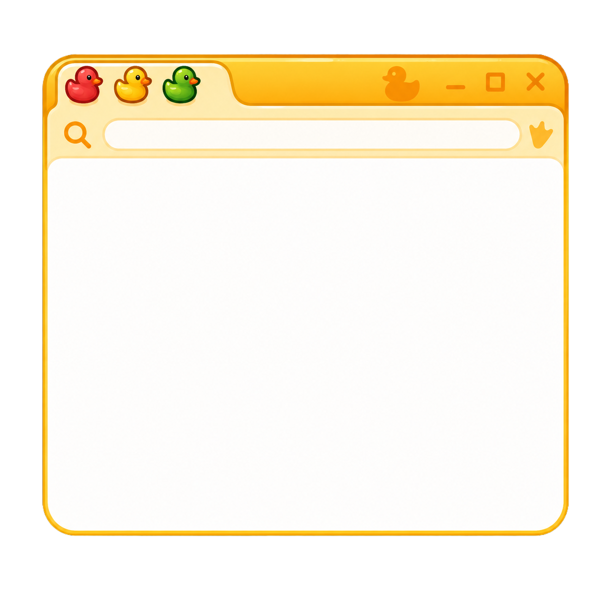
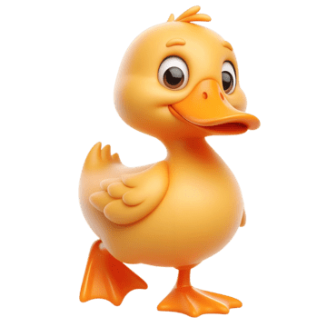
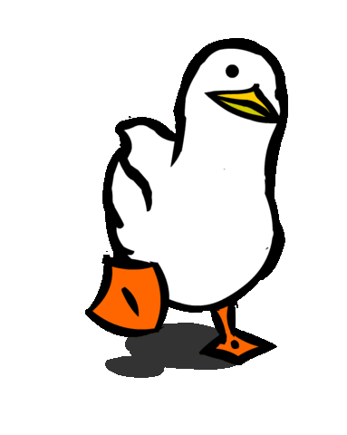

This is a fansite, where ducks rule the pond!
Welcome to my little corner of the internet, where ducks are the stars of the show!
I've always been a big fan of these adorable, funny and slightly chaotic little birds,
so I decided to turn my love for ducks into a small interactive fansite.
Made with ❤️ by Shelby van Deursen | Creative Technology assignment CMD1 26/27
Come quack with me on Instagram! And click here to visit my schoolpage!

Click on the duck in the window to see interesting facts!
Click on the duck to buy or adopt a duck!

Watch this video!